Conte illustré · Eden Yours
Le Petit Prince du Jeu Infini
Un conte de François, en 41 images. Fais défiler ou touche « Suite » : les images suivent chaque passage et apparaissent doucement. Tu peux lancer la chanson et lire en l’écoutant.
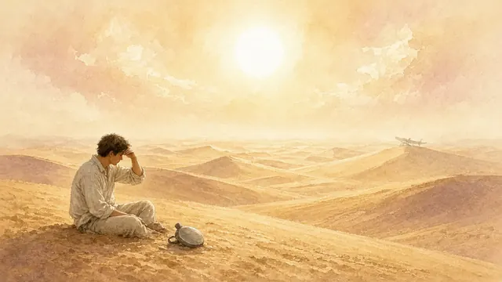
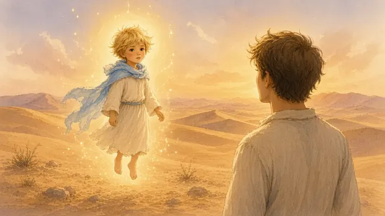
J’étais tombé en panne dans le désert du Sahara, à mille milles de toute habitation humaine. Mon avion avait une avarie et je n’avais presque plus d’eau. C’est alors que m’apparut un petit bonhomme tout à fait extraordinaire.
Il était assis sur une pierre et me regardait tranquillement. « S’il vous plaît… dessinez-moi un jeu », me dit-il.
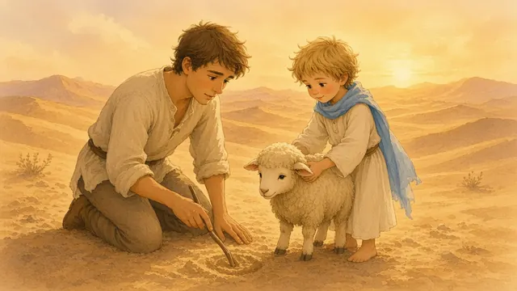
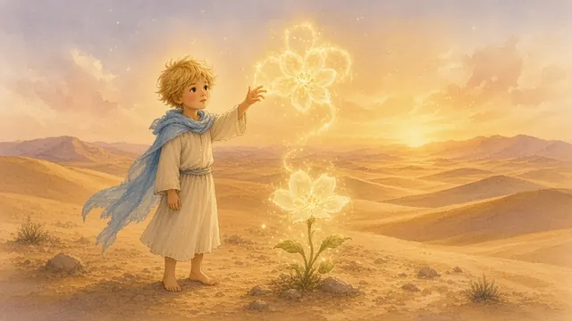
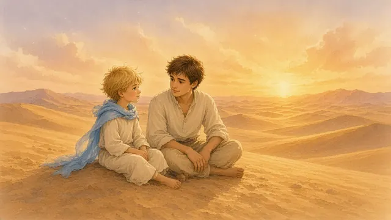
Je fus très surpris. Je lui répondis que je ne savais pas dessiner les jeux, mais que je pouvais dessiner un mouton. Il sourit doucement et répondit : « Non. Dessine-moi un jeu où l’on peut postuler avant de percevoir. » Je ne compris pas tout de suite. Nous nous mîmes à parler, assis sur le sable chaud.
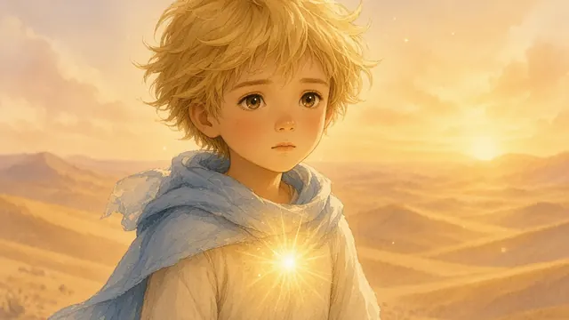
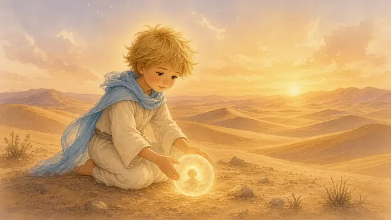
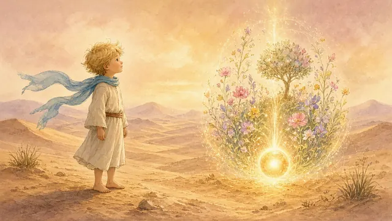
Le Petit Prince me regarda avec ses yeux graves et dit : « L’être postule et perçoit. Il est cause. Il ne commence pas par recevoir le monde. Il commence par poser quelque chose : une intention, une image, un “je veux que ça soit comme ça”. Puis il perçoit ce qu’il a posé. Pas l’inverse. »
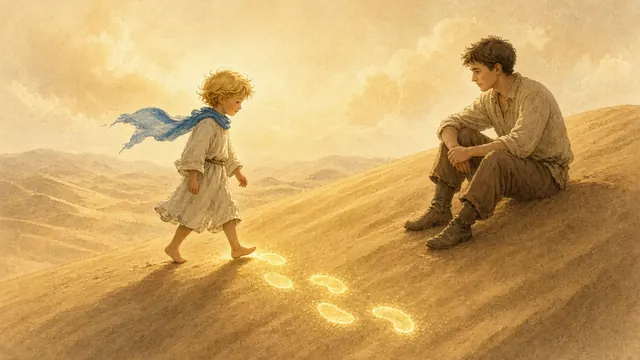
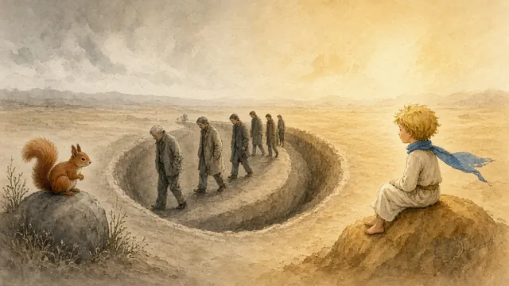
Je lui demandai : « Mais comment fait-on cela ? » Il répondit : « Quand tu marches, tu ne subis pas le sol. Tu postules d’abord : “ma jambe est déjà en avant”. Et tu perçois le mouvement qui suit. Tu es cause, pas effet. La plupart des grandes personnes font l’inverse. Elles perçoivent d’abord, elles subissent, puis elles réagissent. Elles tournent dans une roue à écureuil. »
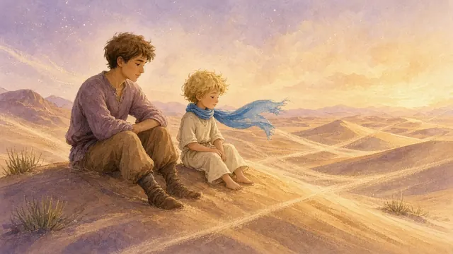
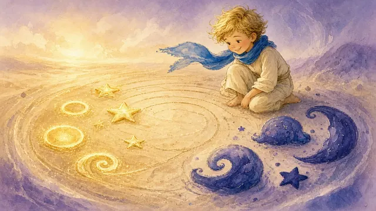
Je restai silencieux un moment. Le vent du désert soufflait doucement. Le Petit Prince continua : « Pour avoir un jeu, il faut faire un tout petit oubli d’amour. Cet oubli est une perception causée. Juste assez pour créer un adversaire, un contraste, un mouvement. Mais quand on regarde tout à partir de la fonction et non de la structure, on débug le jeu. On joue à volonté. »
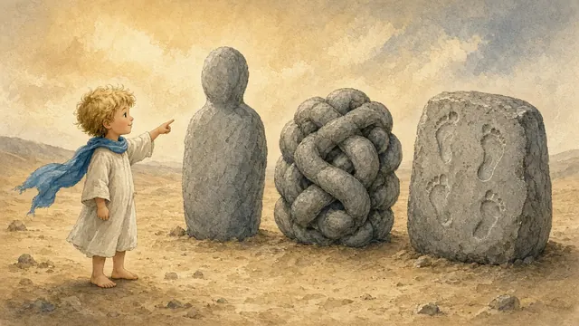
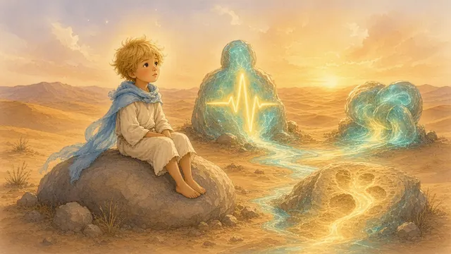
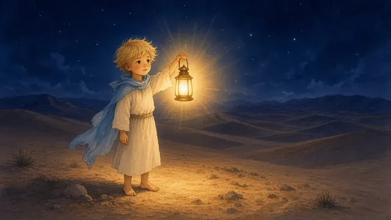
Je lui demandai : « Qu’est-ce que la fonction avant la structure ? » Il sourit : « La structure, c’est la forme que l’on voit : le corps, le problème, le passé. La fonction, c’est ce que cela fait vraiment. Nommer la fonction avant la structure, c’est comme allumer une lumière dans l’obscurité. Tout s’éclaire. »
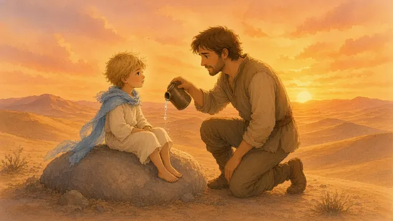
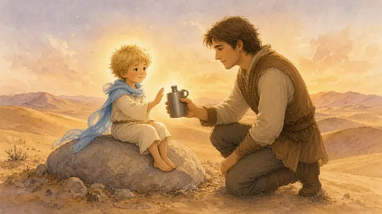
Le soleil descendait. Nous avions très soif. Je lui offris ma dernière goutte d’eau. Il la refusa gentiment et dit :
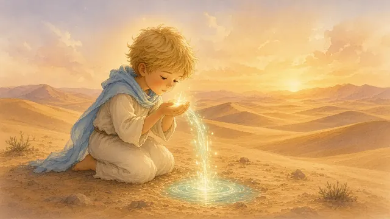
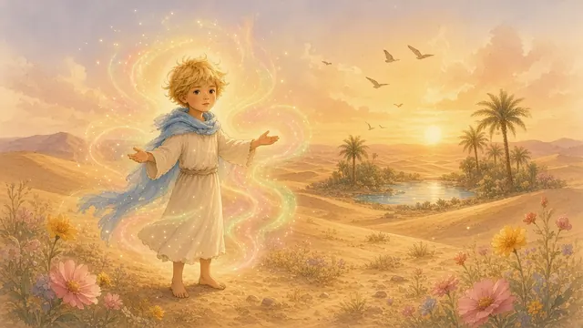
« Je n’ai presque plus besoin de boire. J’ai appris à puiser directement à la source. L’admiration est la première molécule d’énergie. Quand on admire vraiment, on remplit son réservoir sans rien arracher à personne. Je postule “mieux en mieux”, et je perçois le monde qui s’ajuste. »
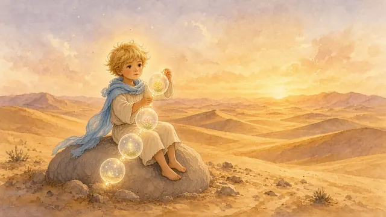
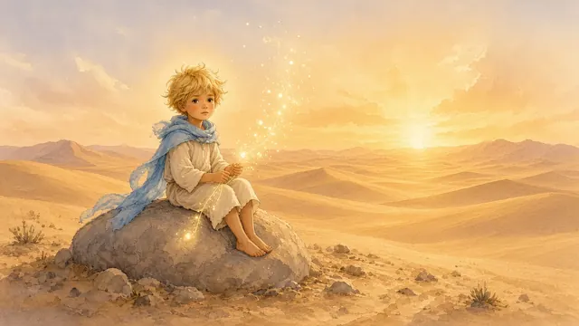
Je lui demandai comment il faisait pour rester si léger. Il répondit : « Je segmente ma vie. Chaque instant est un nouveau segment. À la fin du segment, je remets tout à zéro. Pas d’accumulation, pas de dette. Je reste éveillé en mouvement. Toute action est mieux que rien. Attendre, c’est déjà mourir un peu. »
La nuit tomba sur le désert. Les étoiles brillaient très fort. Le Petit Prince regarda le ciel et dit : « Les étoiles rient parce qu’elles savent que je suis revenu à l’amour inconditionnel. J’ai compris que l’être est cause. Il postule d’abord, il perçoit après. Et c’est avec le cœur que l’on voit juste. »
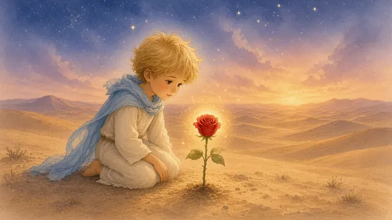
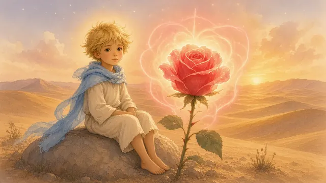
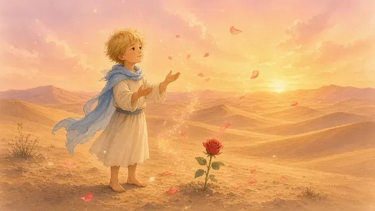
Je lui demandai : « Et ta rose ? » Il répondit avec tendresse : « Ma rose est parfaite, même avec ses épines. J’ai postulé qu’elle l’était. Maintenant je la perçois telle qu’elle est vraiment : une fonction d’amour. Je ne la possède plus. Je l’aime simplement. »
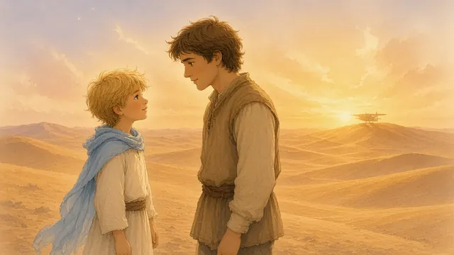
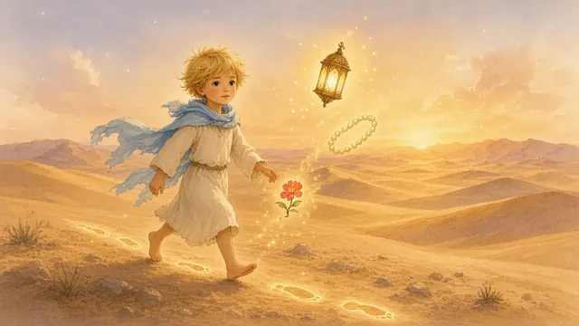
Au petit matin, quand mon avion fut réparé, le Petit Prince me dit : « Tu vas repartir chez les grandes personnes. Raconte-leur cette histoire. Dis-leur que l’être n’est pas obligé de subir. Il peut postuler. Il peut être cause. Dis-leur de nommer la fonction avant la structure, de segmenter leur vie, d’admirer à chaque instant. Et surtout, dis-leur de rester éveillé en mouvement. »
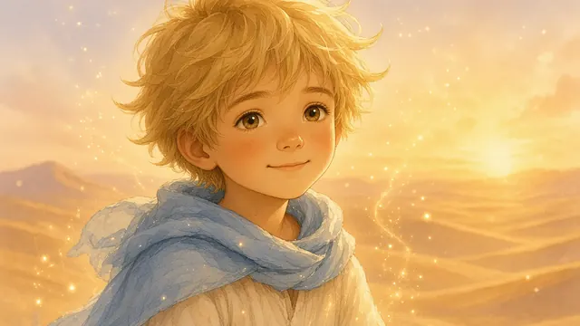
Je lui promis. Il sourit une dernière fois, puis, comme il était venu, il disparut doucement vers son étoile.
Depuis ce jour, quand je regarde le ciel, je pense au Petit Prince du Jeu Infini. Et je me souviens que nous sommes tous cause. Que nous pouvons postuler mieux en mieux. Que nous pouvons jouer à volonté, conscients et légers. Car ce qui est essentiel est invisible aux yeux. Ce qui est essentiel, c’est le cœur qui postule, qui admire, qui aime.
Fin
Ce conte est aussi une chanson. Écoute-la en entier.
« Je suis autour. Je suis déjà dans le Vrai pur. »